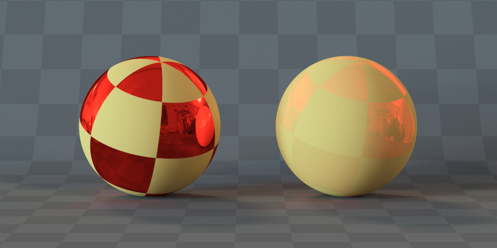

HydraMtl - материал представляющий самые распространенные свойства поверхностей: рассеянное (диффузное) отражение,
направленное (глосси и зеркальное) отражение, с учётом закона Френеля, прозрачность с преломлением и без, просвечивание,
самосвечение (эмиссия) и микрорельеф.
Как правило, именно по этим критериям и создаются настройки материалов, где разные свойства взаимодействия света и
поверхности вынесены в отдельные группы параметров.
Reflectivity
Данная компонента отвечает за зеркальные отражательные свойства, проще говоря блики.
- Glossiness
Этот параметр рассеивает отражения, моделируя микронеровности поверхности, сводя их к почти диффузному.
1- соответствует полностью зеркальному отражению, 0 - рассеянному. В некоторых рендерах для отражений вместо
термина Glossiness используется термин Roughness - шероховатость, это инвертированный glossiness.
Разные модели отражений (BRDF) по разному ведут себя при малой глянцевости (большой шероховатости) и не
всегда совпадают с обычной диффузией.

Материалы с различными значениями glossiness (0.25, 0.5, 0.75).
- Fresnel
Френель - это удобный способ моделирования отражения света под разными углами к поверхности. Например, при попадании луча света на стекло,
часть энергии отражается, а часть проходит внутрь и преломляется. То, какая часть света проходит внутрь, а какая отражается,
зависит от угла падения и определяется формулами Френеля. Формулы Френеля используются и для непрозрачных материалов, в том
числе и для металлов.
Заметка:
Интересно отметить, что используемые в современных рендерах формулы Френеля - это формулы для диэлектриков.
Для металлов, то есть проводников, существуют другие формулы точно описывающие их поведение.
Однако, так совпало, что при задании больших значений IOR в формуле френеля для диэлектриков, они начинают
вести себя похожим образом на формулы Френеля для проводников. Fresnel IOR = 50 или 20 далеко от физического
смысла, но дает похожий результат на формулы Френеля для проводников, то есть “случайно получается” металл.
В Hydra Renderer мы не стали нарушать эту старую добрую традицию, и поддержали ставший “де факто” трюк с
большими значениями fresnel IOR используемый в других рендерах.
На следующем изображении представлено моделирование материала с покрытием, например дерево покрытое лаком, с
использования формулы Френеля. Первый слой представляет собой прозрачную стекловидную плёнку, лак, с определённым IOR Френеля,
например 1.5. Ниже лежащий слой диффузный. Свет проходит сквозь первый слой под прямыми углами, и всё чаще отражается при
скользящих углах. Попав в диффузный слой, свет окрашивается веществом материала, переотражается от частиц и выходит в разных
направлениях, формируя рассеянное, равномерное отражение. Подобное поведение характерно и для поверхностей без дополнительного
покрытия, например полированное дерево, бумага, пластик, камень, органика и т.д. При этом блик по прежнему не окрашивается цветом
диффузии, т.к. это та часть отражённого света, которая не проникает в поверхность, а сразу отражается, сохраняя спектр источника
света без изменений.
Именно вернувшийся цвет из диффузного слоя и слоя отражений мы задаём в настройках материала.

Моделирование материала с покрытием, с использованием формул Френеля.
В металлах свет почти не проникает внутрь, а то, что проникает поглощается или нейтрализуется волновыми эффектами. Поэтому они не
имеют диффузной компоненты. В цветных металлах (медь, золото и т.д.) отражается только определённый спектр, остальное
так же поглощается. Получается яркое цветное отражение. Рассеянность отражения формируется шероховатостью поверхности, как и для
диэлектриков.
Так же стоит отметить, что существуют смешанные материалы, металлизированные краски, композитные материалы и т.д., где поведение
отражений будет смешиваться.
- IOR
Коэффициент преломления (IOR - index of refraction) для формул Френеля, о которых говорилось выше.
Не смотря на то, что в названии речь про преломления, для отражений они тоже работают. IOR влияет на
силу отражение под разными углами к поверхности. Для неметаллов подойдут значения 1.5 - 3. Для металлов 20 - 100.

Диффузия синего цвета и белые отражения. Reflectivity IOR: слева 1.5, в центре
5 и 25 справа. При увеличении IOR материал становится всё более металлическим.
- Anisotropy
Параметр определяет силу анизотропных, направленных отражений, подобных шлифованному металлу, когда структура шероховатостей имеет оформленное направление. В настоящее время доступно только для Beckmann и TRGGX моделей.
- Rotation
Параметр в градусах, определяющий направление анизотропных отражений.
Без и с анизотропией.
- BRDF Type (модель отражения)
Математическая модель рассеяния отражений.
- Phong - простая универсальная модель.
- Torr-Sparr - микрофасетная модель Torrance-Sparrow.
- Beckmann - анизотропная микрофасетная модель.
- GGX - самая распространённая микрофасетная модель, в настоящее время считающаяся стандартом индустрии.
- TRGGX - анизотропная микрофасетная модель.
Микрофасетные моделирует моделируют более реалистичное поведение отражений. Все микрофасетные модели в исходном виде не учитывают переотражение между микрофасетками, поэтому с уменьшением glossiness (увеличением шероховатости) они теряют энергию и не проходят "тест печи", другими словами они темнеют больше чем нужно.

GGX furnace test, “тест печи” показывающий потерю энергии на разных уровнях глоссинесс от 0 до 1.
Для следующей стадии физ. корректности, нужен учёт переотражения - multiscattering, который выполняется дополнительными вычислениями. При этом сферы в этом тесте будут сливаться с фоном, что будет означать полное отражение энергии.
Также при использовании цвета в отражениях, при понижении glossiness шероховатость будет расти и цвет отражений будет немного насыщаться, это физ. корректно и связано с переотражениями в микрофасетках.
GGX singlescattering и multiscattering.
Обратите внимание что на обоих картинках выше текстура только в слоте glossiness, цвет отражений в настройках одинаковый.
Слева цвет потемнел и стал более грязным. Это может выглядеть неплохо для старого водолазного шлема, но второй вариант по
настоящему физ. корректный.
В настоящее время Hydra renderer поддерживает multiscattering только для GGX модели отражений. Он всегда включён и не нуждается в дополнительной настройке.
Заметка:
Вы можете провести этот тест в любой системе визуализации. Расположите сферы с разным уровнем glossiness или roughness на сером фоне, сила отражений должна равняться единице и быть белого цвета, это 100% отражений. Если сферы темнеют, значит мультискаттеринг не поддерживается этой моделью. Если светлеют, значит модель вовсе нарушает закон сохранения энергии.
- Extrusion
Extrusion в Hydra render отвечает за вытеснение диффузии отражением. Hydra поддерживает традиционный способ смешивания диффузного и зеркального отражений применяемый в современных рендерах, где по мере увеличения отражения, оно заменяет собой диффузию.
Strong - вытесняет диффузию по максимальному значению одного из RGB каналов.
Другими словами - по мере роста силы цвета.
Luminance - вытесняет диффузию по мере роста относительной яркости цвета.
Заметка:
Относительная яркость цвета - это цвет представленный в чёрно-белом виде. Это не усреднение каналов,
а их относительное представление яркости для зрения человека. Например зелёный ярче, чем красный,
а красный ярче чем синий. Поэтому в режиме Luminance зелёный цвет будет сильнее проявлять отражения,
чем красный, а красный сильнее чем синий.
Данный параметр влияет на результат, только если цвет отражений не белый. Вычисления вытеснения производятся
в 32 битах, от 0 до 1, где 1 это максимальный цвет (255 в 8 битах).
На следующем изображении у сфер желтая диффузия. В отражении сферы имеют чёрно-красную
чекер-текстуру (“шахматная доска”). Все две модели вытеснения являются физически-корректными, однако они
по разному интерпретируют процесс смешивания цветных компонент диффуза и отражения.

Слева вытеснение Strong. справа Luminance.
Слева вытеснение Strong. Красный цвет в RGB это (255, 0, 0) или в нашем случае в 32 битном значении (1, 0, 0).
Соответственно для вытеснения берётся максимальное значение одного из каналов. Здесь это значение 1, оно больше
других двух значений. Это и будет силой вытеснения. 1 - это максимальная яркость, значит и вытеснение будет
максимальным. Поэтому мы видим только отражение, диффузия полностью вытеснена.
Справа вытеснение по Luminance. Мы используем классическую формулу перевода цвета в яркость по формуле:
Y = 0.2126 * R + 0.7152 * G + 0.0722 * B
Подставляем наши цвета (1, 0, 0) в формулу:
Y = 0.2126 * 1 + 0.7152 * 0 + 0.0722 * 0 = 0.2126. Отражение вытеснило диффузию всего на
0.2126 или примерно 21%, что мы и видим.
Оба способа имеют право на жизнь, но метод Strong нам кажется более интуитивным, поэтому он выставлен в
настройках по умолчанию.
Transparency
Эта группа параметров отвечает за прозрачность материала с учётом преломлений и внутренних переотражений.
- Transparency color
Параметр “Transparency” имитирует мгновенное окрашивание луча, без дальнейшего изменения яркости и цвета при прохождении через объём.
При наличии прозрачности Френелевские отражения включаются автоматически, так как такое поведение наиболее
точно соответствует реальным прозрачным объектам. Отключить френеля в этом случае нельзя.
- Glossiness
То же самое что Glossiness для отражений. Позволяет делать матовые преломляющие материалы.
Transparency glossiness: 0.25, 0.5 и 0.75.
Из-за того что при преломлении луч проходит через поверхность дважды, при тех же значениях glossiness
преломления будут размываться намного сильнее отражений.
Начиная с версии 2.5 для преломлений используется multiscattering GGX.
- Distance multiply и Distance color
Эти параметры моделируют постепенное изменение яркости и цвета луча, другими словами окрашивание,
по мере прохождения его через объём объекта. Это связано с заполнением объёма разных химических элементов,
не видимых глазу, которые поглощают разные длины волн света, пропуская остальные, что и изменяет его цвет,
но в целом оставляя при этом объём прозрачным.
Заметка:
Поглощённый свет переводится в тепло. Именно поэтому, например, корпус чёрного автомобиля стоящего под солнцем, будет горячее корпуса белого автомобиля. Вообще любой не белый цвет, это результат поглощения одних длин волн света и отражения остальных. Отражённые любым способом волны, попадая в глаз человека и вызывают ощущение цвета. В компьютерной графике мы не заботимся о поглощённых волнах, а оперируем лишь отражёнными, т.е. теми, что мы видим.
Сила окрашивания зависит от реального масштаба сцены и происходит экспоненциально, по закону
Бугера-Ламберта-Бэра. Чем больше параметр “Distance multiply”, тем быстрее свет окрашивается внутри
прозрачного объекта. Distance multiply = 0, отключает эту опцию.
Distance multiply: 10, 25 и 50. Distance color: зелёный, RGB(11, 204, 79).
Обратите внимание, что “Transparency”, на данном скриншоте белого цвета, с множителем равным 1,
для всех 3 объектов, а их цвет обусловлен только постепенным окрашиванием. Чтобы окрашивание темнело,
нужно яркость цвета ставить меньше 100%. Для наглядности призмы посчитаны без отражений.
Заметка:
В предыдущих версиях этот параметр назывался Fog color. Но мы решили переименовать его в
Distance color. Мы считаем это более подходящим термином для этого явления, так как объём остаётся
прозрачным и только окрашивается.
Термин “Fog” (с англ. туман), всё-таки больше подходит для эффекта
подповерхностного рассеивания, когда в объёме появляется видимая, диффузная взвесь похожая на туман,
способная, при достаточной плотности, сделать материал не прозрачным. Этот эффект пока не реализован в Hydra.
Оба эти эффекта физически корректны, и имеют схожую природу, связанную с заполнением
объёма разных примесей. В первом случае эти примеси не видны и влияют только на изменение яркости и
цвета. Во втором видны, из-за более крупных фракций, и имеют собственные отражательные свойства, в
большинстве случаев диффузные, что и выглядит как однородный туман.
- IOR
Index Of Refraction - показатель преломления. Влияет только на угол преломления.
Показывает отношение скорости света в вакууме к данной среде. Свет на границе двух сред с разной плотностью
меняет своё направление. Чем больше этот показатель, тем плотнее вещество и сильнее отклоняются лучи света.

Вазы с разными показателями преломления: 1.5, 1.75, 2.0. Для наглядности вазы посчитаны
без отражений.
Вот некоторые распростанённые показатели:
| # |
Материал |
IOR |
| 1 |
Воздух |
1.0003 (в компьютерной графике, как правило равно 1) |
| 2 |
Лёд |
1.31 |
| 3 |
Вода (20°С) |
1.333 |
| 4 |
Спирт |
1.36 |
| 5 |
Оливковое масло |
1.46 |
| 6 |
Стекло (обычное) |
1.48 - 1.53 |
| 7 |
Стекло (оптическое) |
1.48 - 2.18 |
| 8 |
Изумруд |
1.59 |
| 9 |
Топаз |
1.63 |
| 10 |
Рубин |
1.76 |
| 11 |
Сапфир |
1.77 |
| 12 |
Алмаз |
2.417 |
Заметка:
Может показаться странным, что показатель преломления льда ниже воды, а значит и его плотность тоже.
Но все мы помним, что лёд не тонет. Это и говорит о его меньшей плотности. Вода при замерзании
расширяется, и её плотность уменьшается. Другими словами, данный объём льда весит меньше, чем тот же
объём воды.
Когда вы моделируете стекло, вам нужно настраивать отдельно два параметра - fresnel IOR в отражениях и IOR
в преломлениях. Параметр fresnel IOR влияет только на количество отраженного/пропущенного света, но не влияет
на изменения угла падения луча при преломлении. Напротив, IOR в разделе transparency влияет только на изменение
угла преломления луча, но никак не влияет на количество отраженной или пропущенной энергии. Как правило, оба
параметра должны совпадать.
- Thin (no refract)
Указывает на то, что объекты с этим материалом тонкие, не имеющие толщину. Этот параметр имеет смысл
включать, если вы настраиваете, например, материал оконного стекла, смоделированного простой плоскостью
или какой-то пластик. Если в таком объекте не включить этот параметр, прозрачность будет темнее чем нужно.
Это связано с особенностью расчётов преломлений, для тонких объектов они немного отличаются.
Translucency
В настоящий момент translucent - это простая модель просвечиваемого материала, подходящая для реализации преимущественно тонких объектов: тканей, листьев деревьев, бумаги, загрязненных стекол и т.д. Она работает так же как освещение Ламберта, но с обратной стороны. При увеличении транслюцентности диффузия будет уменьшаться вплоть до полного отсутствия. Это моделирование полного прохождения света сквозь объект. Например: Diffuse multiply = 1, Translucency multiply = 0.8, Translucency color = белый. То есть 80% света прошло насквозь, диффузия на рендере уменьшится автоматически до 0.2 (20%).
В Hydra render вы можете сами выбирать цвет и текстуру для транслюценции, для более тонкой настройки просвечивания, но это несколько осложняет её понимание. Потому что яркость цвета транслюцентности влияет на итоговую силу просвечивания - чем темнее цвет, тем меньше просвечивает. И в этом случае параметр Translucency multiply перестаёт показывать пропорции прохождения света, а становится лишь множителем цвета и текстуры.
В связи с этим остаётся полагаться на визуальные пропорции. Для этого нужно отключить заднюю подсветку в материал эдиторе, выставить цвет или текстуру в диффузию и транслюцентность и менять параметр Translucency multiply, наблюдая изменение пропорций просвечивания, для поиска нужного варианта.

Так же не следует ожидать полностью физически корректной симуляции подповерхностного рассеивания (SSS) для объемных тел.
Emission
Emission используется для самосвечения объектов. Например, экран телевизора или плоскость с панорамой города за окном. Стоит учесть, что светящиеся меши сэмплятся в Hydra только при помощи неявной стратегии сэмплирования. Это означает, такой источник учитывается только тогда, когда отраженный луч попал в него случайно. Такая модель хорошо работает, если объект имеет крупный размер или эмиссия не слишком яркая. Поэтому если Вам нужно смоделировать яркий источник света маленького размера, Emission для этого использовать не рекомендуется, лучше создать источник света явно или воспользоваться материалом HydraMtlLight.
Свет от Emission всегда прибавляется к цвету материала. Никакой модели вытеснения, как в случае с отражениями и диффузией здесь нет.
- Cast GI
Данная опция включает и отключает диффузное освещение от этого материала, то есть свечение этого материала на другие объекты, как источник света. В основном эта опция используется для моделирования окружения за окном. В этом случае за окном ставится плоскость, имитирующая окружение, галка отключается, а освещение диффузных поверхностей настраивается при помощи “Небесных Порталов” (Sky Portals) или других источников с отключенной видимостью. Так образом, за окном мы увидим какой-то пейзаж, он будет влиять на отражения, но светить на поверхности будет другой, реальный источник света.

За окнами расположена плоскость с фотографией улицы в слоте Emission. Однако, она не освещает комнату. Вместо этого мягкий свет в комнате настроен при помощи прямоугольных источников света, для ускорения просчета.
В версии рендера 2.3b появился материал HydraMtlLight, который позволяет делать свет от таких плоскостей с фотографией с высокой скоростью просчета, как у обычного источника.
Relief
Данная вкладка служит для настройки микрорельефа поверхности на основе текстур или по другому говоря — карт, содержащих информацию о нормалях (Normal map) и высот (Height map, обычный бамп). Этот рельеф лишь имитация, поэтому подходит для не слишком сильного рельефа.
Слева реальная, выдавленная по текстуре высот геометрия. Справа плоскость с текстурой нормалей. В правом нижнем углу показаны использованные текстуры нормалей и высот.
При использовании текстуры нормалей, её нужно предварительно положить в стандартную карту 3ds Max - Normal Bump. Текстуру высот можно использовать напрямую. Совместное использование текстур нормалей и высот пока не поддерживается.
Параметры:
- Height - задает силу выдавливания.
- Smooth lvl. - задаёт размытие рельефа, с сохранением резких краёв, для устранения лишней мелкой детализации.
- Invert height - инвертирует текстуру нормалей и высот. Для инвертирования каналов в текстуре нормалей используйте стандартные флажки внутри карты Normal Bump.
- Parallax (чекбокс) - включает алгоритм “Parallax Occlusion Mapping” (POM) создающий иллюзию реальной геометрии. Работает только с текстурами высот.
- Parallax - задает глубину продавливания поверхности внутрь для POM.
Ограничение:
Параллакс временно недоступен.
Так же, в большинстве случаев для текстур нормалей нужно отключать гамма коррекцию. Для этого, при загрузке текстуры, нужно выставить Gamma Override = 1.0.


{kind=link}
{kind=link}
{kind=link}
{kind=link}
{kind=link}